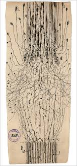

Искусство и творчество¶
15. Художники и ученые¶
КЛЮЧЕВЫЕ ВОПРОСЫ
Можно ли сформулировать научно обоснованное описание деятельности творческого человека?
Что общего у художников и ученых?
Насколько они разные?
ПОЧЕМУ ЭТО ВАЖНО?
Творческое мышление кажется принципиально отличным от научного; тип людей, которые работают в науках и искусстве, кажется принципиально иным. Тем не менее, великие ученые, такие как Тесла, и великие художники, такие как Леонардо, похоже, имеют много общего.
Ученые создают абстракции, которые описывают мир уравнениями и моделями. Художники создают абстракции, которые описывают мир в красках, свете, звуке, движении.
Обе стороны дают множество описаний мира и создают новые возможности для взгляда на мир. Художники важны, потому что они показывают нам, как смотреть на мир по-другому.
ГДЕ НАЙТИ БОЛЬШЕ ИНФОРМАЦИИ?
https://www.youtube.com/watch?v=jt218332bRQ

16. Вы художник?¶
КЛЮЧЕВЫЕ ВОПРОСЫ
Сколько раз вы делаете фотографии на своем телефоне?
Сколько раз вы публикуете фотографии в социальных сетях (VK, Facebook и т. Д.)?
Чем вы заняты, когда публикуете фотографии?
Сколько описаний сторон вашей жизни в социальных сетях?
ПОЧЕМУ ЭТО ВАЖНО?
Если творческое мышление заключается в создании множественных описаний действительности, тогда мы более творческие, чем мы могли бы подумать!
Каждый раз, когда мы фотографируем, мы создаем описание. При публикации в социальных сетях мы добавляем это описание к нашим другим описаниям, которые существуют.

Однако есть разница между тем, что мы делаем и что может сделать художник: художники собирают множество описаний вещей, чтобы они стали последовательными.
Художники находят общую картину между различными описаниями. Художественное мастерство включает в себя манипулирование несколькими описаниями, чтобы выявить их общую картину.
Поиск общей картины - это способ говорить о более глубоком смысле реальности.
ГДЕ НАЙТИ БОЛЬШЕ ИНФОРМАЦИИ?
17. Множественные описания в видео¶
КЛЮЧЕВЫЕ ВОПРОСЫ
Если вы хотите научиться исправлять утечку или ошибку в своем автомобиле, вы ищете какой-то текст в Википедии или ищете видео на YouTube?
Когда вы смотрите видео с YouTube, что с вами происходит с течением времени?
В ключевой момент кульминации в видео, каковы элементы, которые вызывают это удивление?
ПОЧЕМУ ЭТО ВАЖНО?
Видео представляет несколько описаний мира во времени.
Многочисленные описания, представленные видео, имеют много измерений и меняются со временем.
Эдгар Морен в своей книге «Кино и воображаемый человек (Cinema and the imaginary man)» (Morin 2005) подробно раскрывает различные описания, которые представляет кинотеатр. К ним относятся:
способ изменения света и тени
способ изменения размера объектов
способ изменения звука и музыки в фильме

способ изменения речи
способ перемещения камеры
сокращение одного выстрела до следующего
… и так далее …
Различные измерения Морина связаны между собой. Рассматривая, как YouTube связывает несколько описаний с течением времени, мы можем говорить о структурных отношениях между его различными элементами.
Многие из этих проблем движущегося изображения рассматривались в российском кино, особенно в работах Вертова и Эйзенштейна.
ГДЕ НАЙТИ БОЛЬШЕ ИНФОРМАЦИИ?
18. Объекты, генерируемые компьютерами¶
КЛЮЧЕВЫЕ ВОПРОСЫ
Может ли компьютер быть художником?
В современном искусстве сейчас часто использует компьютеры – что компьютеры привносят в художественное выражение?
В чем разница между компьютерным объектом и природным объектом?
ПОЧЕМУ ЭТО ВАЖНО?
Компьютер генерирует свет на экране для создания виртуальных «объектов». Этими виртуальными объектами можно легко манипулировать, а алгоритмы могут генерировать бесконечные вариации объекта.
Люди показывают компьютерные объекты и в процессе обнаруживают что-то о себе, относящееся к ним самим. Поскольку существует много разных компьютерных объектов, существует множество возможных способов, которыми люди могут что-то раскрывать о себе.
Благодаря 3D-печати, компьютеры могут создавать увеличивающиеся массивы физических объектов, включая бумажные документы, трехмерные печатные модели и даже здания.

Практическое использование компьютерных объектов включает использование адаптивных алгоритмов для максимизации производительности транспортного средства (например, «генетические алгоритмы») или использование общих 3D-архитектурных планов при проектировании здания (технология, известная как Building Information Modeling)
Виртуальная реальность - еще один пример компьютерных объектов, которые предоставляют множество описаний мира.
Визуализации (или «визуальная аналитика») данных могут также предоставлять множество различных описаний действительности, выделяя определенные данные, о которых люди могут говорить.
ГДЕ НАЙТИ БОЛЬШЕ ИНФОРМАЦИИ?
19. Коммуникация с использованием Эмодзи¶
КЛЮЧЕВЫЕ ВОПРОСЫ
Почему люди посылают смайлики или стикеры WeChat друг другу в сообщениях?
В чем разница между использованием слова для чего-то и стикером?
Если бы вы ответили на этот вопрос стикером, что бы это было?
ПОЧЕМУ ЭТО ВАЖНО?
С появлением текстовых сообщений связь все больше дополнялась изображениями и символами.
Каждый стикер имеет особые структурные свойства, которые представлены за один момент. Многие стикеры - это анимации, и представляют информацию со временем. Структура момента - это то, что называется синхронным, а разворачивающееся со временем называется диахроническим

Разговоры работают одинаково: они включают диахронические и синхронные аспекты, каждый из которых дает много описаний, которые координируются в течение всего процесса.
Сочетание стикеров и слов создает сложные комбинации разных элементов, все из которых говорят по-разному.
Когда вы отправляете стикеры друг другу, вы являетесь художником?
20. Творчество и счастье¶
КЛЮЧЕВЫЕ ВОПРОСЫ
Делает ли вас творчество счастливым? Если да, почему?
Связаны ли психическое заболевание и творчество?
Когда вы выражаете свои чувства, какие изменения происходят в вашей среде?
Когда вы выражаете свои чувства, какие изменения происходят в вас?
ПОЧЕМУ ЭТО ВАЖНО?
Творческий процесс является одним из самых высоких достижений человеческого интеллекта. Внутри иерархий обучения, таких как таксономия Блума (Bloom 1956), мы находим «творчество» на вершине целого ряда интеллектуальных достижений из воспоминаний памяти в нижней части синтеза и анализа в середине.
В психоаналитических подходах к творческому процессу было высказано предположение, что творчество - это состояние бытия, которое соединяет Эго (Я) с бессознательным в непрерывном процессе (Read 1958; Ehrenzweig 1968; Milner 2010).
Психическое заболевание характеризуется как «творчество, в котором что-то пошло не так» (Ehrenzweig 1968).
Это можно сравнить с терапевтическим процессом Фрейда, который был диалектически ориентированным («разговорная терапия»)
Лечение психологических травм через этот разговорный процесс заключается в формулировании психодинамических ограничений и введении их в беседу терапевта и пациента.
Лабиринт (последовательная структура) творческого поиска. Творческий мыслитель должен продвигаться по широкому фронту, открывая множество вариантов. Он должен получить всеобъемлющий взгляд на всю структуру пути вперед, не имея возможности сосредоточиться на какой-либо одной возможности.
21. Психический процесс, индивидуализация и успешные люди¶
КЛЮЧЕВЫЕ ВОПРОСЫ
Что это значит, знать, кто вы есть?
Как успешные люди во всех областях развили такое сильное чувство самоидентификации, которое дает им уверенность действовать в мире?
Каков баланс между умом и действиями среди успешных людей?
ПОЧЕМУ ЭТО ВАЖНО?
«Индивидуализация» - это термин Юнга для процесса, при котором идентичность возникает из недифференцированного бессознательного.
Существенная концепция динамического отношения между компонентами сознания аналогична связи Фрейда между Эго, Бессознательным и Суперэго.
То, что происходит между психотерапевтом и пациентом в психоанализе, - это процесс извлечения вещей из подсознания в сознание, путем превращения подсознательных явлений в общение с терапевтом.
Восстановление равновесия важно для индивидуализации: это то, что происходит, когда неопределенность психики уравновешивается управлением неопределенностью социальных отношений до того момента, когда индивид может видеть себя «целым» и отличным от других людей и других вещей.
В юнгианском психоанализе индивидуация проходит через признание фундаментальных архетипов, которые Юнг называет коллективным бессознательным.
22. Неопределенность¶
КЛЮЧЕВЫЕ ВОПРОСЫ
Когда вы в чем-то не уверены, что вы делаете?
В какой степени неопределенность проявляется в индивидуальном сознании и в какой степени это происходит в социальной среде?
Почему разговор важен для управления неопределенностью?
ПОЧЕМУ ЭТО ВАЖНО?
Неопределенность присутствует в индивидуальном сознании - никто не может быть уверен полностью в чем-либо
Неопределенность также присутствует в социальной среде: поскольку никто не уверен в чем-либо, есть много аргументов в отношении смысла вещей, политических вопросов, научных знаний и т. Д.
Методы системного моделирования могут помочь в изучении взаимосвязи между управлением неопределенностью в психике и управлением неопределенностью в окружающей среде.
Приведение процесса управления неопределенностью таким образом помогает согласованно связать как психодинамический механизм Фрейда с реляционным механизмом Боулби. Предполагается, что ущерб отношениям неизбежно будет иметь психодинамические эффекты.
Борьба за управление неопределенностью в отношении близости к воспитателю должна быть связана с некоторой более глубокой неопределенностью в отношении недифференцированного опыта ребенка (и матери) и более конкретных «категорий» опыта, которые возникают, когда «близость» становится таковой, над которой ребенок пытается осуществлять контроль. Таким образом, недифференцированное подсознание ребенка и матери и механизм управления неопределенностью подсознания образуют согласованную часть процесса привязанности.
23. ЩЧто происходит в момент, когда мы обсуждаем вопросы, в которых не уверены?¶
КЛЮЧЕВЫЕ ВОПРОСЫ
Как щедрость поможет справиться с неопределенностью?
Являются ли художники щедрыми в том, как они выражают себя?
Быть открытым в выражении своих эмоций одно и то же, что и быть щедрым?
ПОЧЕМУ ЭТО ВАЖНО?
Нет человека, который бы был полностью в том или ином вопросе. Но иногда мы притворяемся, что уверены!
Представьте вы дарите подарок: подарок - очень сложный объект, который может быть интерпретирован по-разному. Это значение часто неоднозначно. Именно эта двусмысленность делает его мощным.
При обмене чего-то на деньги смысл и ценность обмена должны быть ясны всем, кто в нем участвует. Однако подарок - это объект, который функционирует, раскрывая что-то из внутренних миров дающего и получателя.

Подарок - это приглашение раскрыть индивидуальную неопределенность друг другу, вынося его в социальную сферу, где разговор может порождать новую динамику, которая поддерживает социальную сплоченность.
Антрополог Жорж Батай (Batayle 1991), глубоко размышлял о подарках. Под влиянием концепции Потлача Мосса (Mauss and EvansPritchard 2011) Батай утверждал, что подарки в сообществах - это процессы признания фундаментальных неопределенностей существования.
Батай утверждает, что расточительство было тогда главным актом, и в первобытном обществе он принял форму человеческих жертвоприношений и щедрых праздников.
В современном обществе он может принимать форму буйного поведения - от искусства до футбольных матчей.